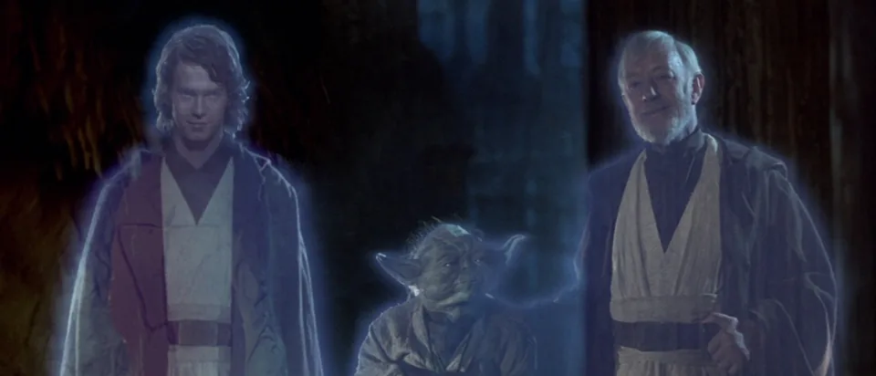
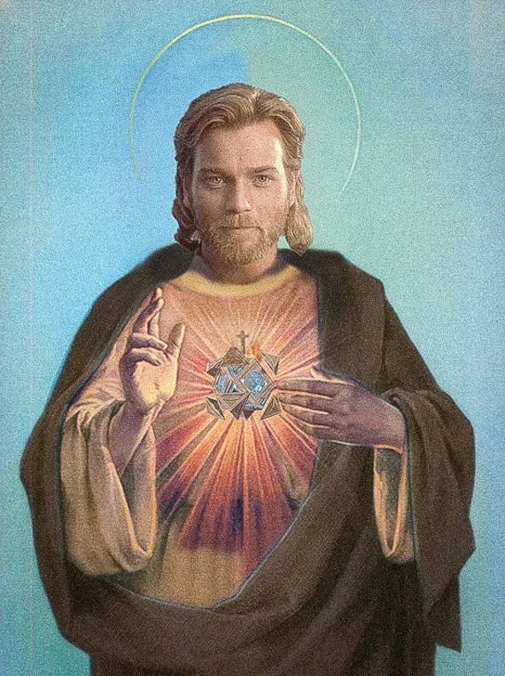

Segundo fãs de Star Wars, Anakin Skywalker e Jesus Cristo são bem similares: ambos nasceram "milagrosamente" e são "os escolhidos" pelas respectivas forças de cada universo. O diretor da franquia, George Lucas, acabou tendo conhecimento dessa comparação e decidiu falar sobre em entrevista.
Falando com Barry Norman (via TheForce.net), Lucas foi questionado sobre suas inspirações "quase cristãs" na trilogia prequel que conta a origem de Darth Vader antes de ser preso por trás de toda aquela roupa especial.
"Os três primeiros filmes da série foram, em certo sentido, peças de moralidade, mas você levou isso muito mais longe no novo, porque há quase um elemento quase cristão aqui, de que Anakin é o resultado de um nascimento virginal e ele é o escolhido. Quão intencional foi isso?" o entrevistador pergunta.
"Na verdade, não foi pensado como um nascimento virginal, mas sim como uma metáfora para a vida," respondeu o diretor, dizendo que não queria criar uma "nova religião" ou algo parecido. Em vez disso, Lucas fala que ao longo de várias histórias de heróis e mitologias, personagens sempre estavam envolvidos em um "nascimento especial".
"A ideia é que o herói, ao longo da mitologia, sempre foi o resultado de um nascimento especial. Normalmente, como com Hércules, o pai é um deus. Todo herói tem um nascimento misterioso."
Claro, isso faz ainda mais sentido dado o tanto de influências de Lucas usou para criar Star Wars, mas mesmo assim é ver similaridades entre vários personagens fictícios e até salvadores e profetas como Jesus e heróis bíblicos, afinal é algo "humano".Claro, isso faz ainda mais sentido dado o tanto de influências de Lucas usou para criar Star Wars, mas mesmo assim é ver similaridades entre vários personagens fictícios e até salvadores e profetas como Jesus e heróis bíblicos, afinal é algo "humano".
De qualquer modo, isso não impede que as pessoas ainda, sem querer, acreditem que personagens de Star Wars são Jesus, como por exemplo uma igreja colocando a foto de Obi-Wan Kenobi em uma colagem de Jesus e outro usuário de Reddit que deu uma foto do personagem para os pais e eles penduraram na parede achando que fosse o Salvador.